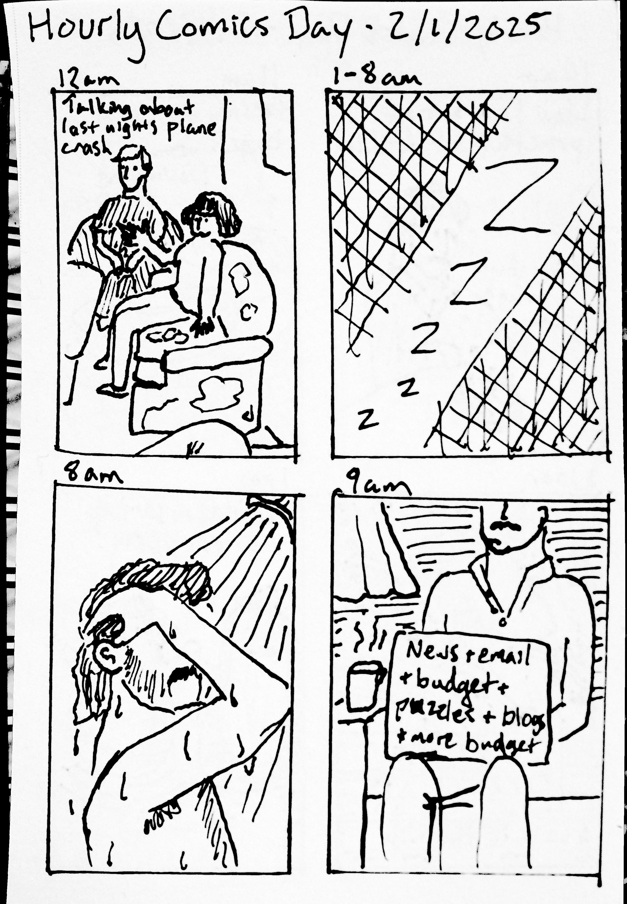
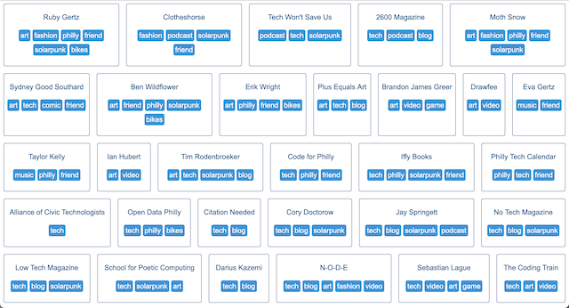

It's okay to let things end

Wed Feb 12 2025:
Last week, I was listening to Spotify for the last time. Already I was planning a breakup and starting
to collect more physical and digital albums, but this particular session was genuinely the proverbial
last straw. I had queued up a few albums while I was working. I had planned that when they ended I would
wrap up what I was working on and go take a walk. But after the last album ended and the queue was over,
Spotify had already loaded another album I did not ... Read more
Hourly Comics Day 2025

It's fun to make tangible things. Between sewing & drawing today, I made things I am proud to show, even
if both have errors or mistakes.
insteadofai.site icon

A 48x48 pixel image I made as the favicon for insteadofai.site.
insteadofai.site
A webpage that lists resources to use instead of Generative AI.
Building the web I want to see

I have made a webring! This feels important to me as I try (along with many others) to build a better
web. This was a project I have been meaning to take on for some time. I did start with a basic set of
... Read more
Over the Garden Wall poster
Very excited to watch Over the Garden Wall again with some friends! This is easily one of my favorite pieces of media in general.
It is a wonderful piece of Americana and plays with nostalgia in a delightfully bittersweet wa... Read more
Underhill from Red Mars

I've been reading the Mars Trilogy by Kim Stanley Robinson. I've been loving these books and flying through them. This was how I imagined the initial settlement, Underhill, with it's barrel-shaped shelters and giant salt pyramid.
... Read more